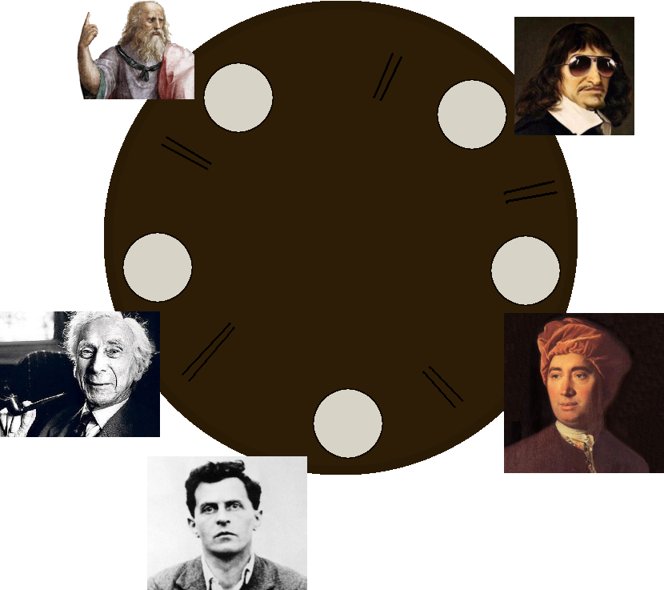
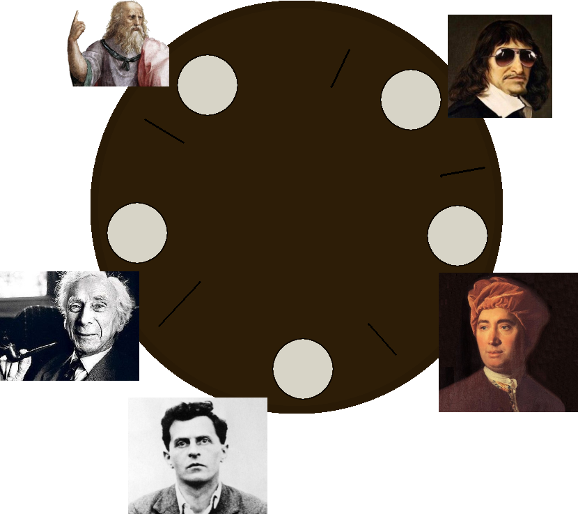
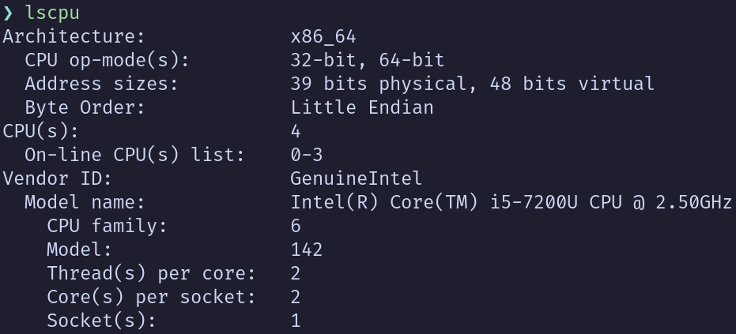
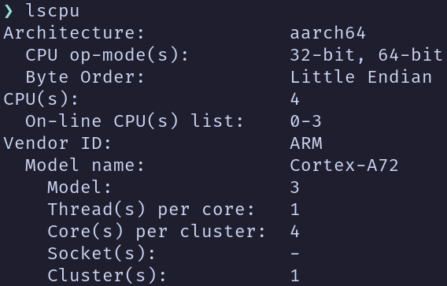

Cours 7 — Programmation concurrente & calcul distribué
Patrick Fournier
MAT8186 — Techniques avancées en programmation statistiques R
Automne 2024
Généralités
- Objectif: gains en performance
- Approches possibles
- Améliorer algorithme
- Améliorer implémentation
- Améliorer hardware
- Paralléliser
Limitations
- Parallélisation ⇒ opérations supplémentaires
- Ordonnancement (scheduling)
- Communication inter-processus (IPC)
- ∃ # processus optimal
- Dépend du problème, algorithme, implémentation, environnement...
Type de parallélisme
- Mémoire partagée
- Toutes les unités de calcul (cores) partagent la même mémoire
- Mémoire distribuée
- Noeud (node): ensemble cores/mémoire
- Chaque node possède une copie des données
Exemple: Mémoire partagée

Exemple: Mémoire distribuée

Communication inter-processus (IPC)
- ↗ # processus ⇒ ↗ puissance de calcul 😀
- ↗ # processus ⇒ ↗ communications 😥
- Souvent, principale source de ralentissement dù au parallélisme
- Plus prononcé lorsque la mémoire est distribuée
- Solution: optimiser la topologie
Exemple: Manager/Workers
⇔ Graphe biparti.

Exemple: Fully Connected
⇔ Graphe complet.

Exemple: Ring
⇔ Cycle.

Le dîner des philosophes
- Dijkstra
- Philosophe: 2 actions: penser et manger.
- Appétit et nourriture infinis
- 2 baguettes pour manger
- N'a accès qu'aux baguettes lui étant adjacentes
Philosophes vertueux
 $\#$ baguettes $= 2 \times \#$ philosophesPhilosophes vicieux
 $\#$ baguettes $= \#$ philosophesSolution naïve
- Penser jusqu'à ce que baguette gauche disponible puis la prendre
- Penser jusqu'à ce que baguette droite disponible puis la prendre
- Manger $s$ secondes
- Déposer baguettes
- Répéter
Résultat
- Tous les philosophes prennent la baguette à leur gauche en même temps
- Baguette gauche de l'un $\Leftrightarrow$ baguette droite de l'autre
- Comdamnés à penser jusqu'à la mort
- Deadlock
Problèmes classiques
- Plusieurs travailleurs
- Ressources partagées
Peut mener à
- Deadlock 🍣
- Ressource starvation 💣
- Race condition 🏃
Deadlock
$t_1, t_2$ des travailleurs
- $t_1$ veut travailler
- A besoin d'une ressource utilisée par $t_2$
- $\Rightarrow t_1$ attend $t_2$
- $t_2$ veut travailler
- A besoin d'une ressource utilisée par $t_1$
- $\Rightarrow t_2$ attend $t_1$
Race condition
- Comportement dépend l'ordre d'exécution des instructions
- Ordre non contrôlé $\Rightarrow$ comportement imprévisible
- Programmation concurrente $\Rightarrow$ pas de contrôle de l'ordre
- Opérations non associatives
r$> Reduce(`+`, sample(1:10))
[1] 55
r$> Reduce(`+`, sample(1:10))
[1] 55
r$> Reduce(`-`, sample(1:10))
[1] -41
r$> Reduce(`-`, sample(1:10))
[1] -45
Ressource starvation
- Travailleur n'a pas accès aux ressources nécessaires
- Toutes les ressources sont utilisées
- Ressources non libérées
💣
f <- function(f) {
## Crée un cluser de 2 travailleurs.
cl <- parallel::makeCluster(2)
## Expose `f` à chaque travailleur.
parallel::clusterExport(cl, "f")
## Demande aux travailleurs d'exécuter `f(f)`.
parallel::clusterCall(cl, f(f))
}
parallel
- Package
paralleldans la librairie standard - Union de
snowet demulticore - Fourni des fonctions telles que
stopClusterdetectCoresmclapplyparlapply
Coeur physique vs coeur logique
- Coeur physique $\Leftrightarrow$ objet physique
- Coeur logique $\Leftrightarrow$ illusion OS
- 1 thread/coeur logique
- Multithreading simulatané: Utilisation des ressources innutilisées d'un coeur physique
- Intel: Hyperthreading
detectCores: coeurs logiques
Laptop (x86_64)
Raspberry pi 4 (arm)
Exemple: lmSlow, mclapply
lmSlow_mc <- function(m, ncores) {
parallel::mclapply(seq_len(m), \(k) {
random_values <- rnorm(1e7)
X <- matrix(random_values, ncol = 20)
y <- rnorm(5e5)
reg <- lm(y ~ X)
coef(reg)
}, mc.cores = ncores)
}
mclapply
- Simple 😃
- Construction du cluster
- Gestion des rngs
- POSIX seulement: pas de Windows 😒
- Impossible de réutiliser un cluster 😒
Exemple: lmSlow, parlapply
lmSlow_par <- function(m, ncores = parallel::detectCores()) {
cl <- parallel::makeCluster(ncores)
ret <- parallel::parLapply(cl, seq_len(m), \(k) {
random_values <- rnorm(1e7)
X <- matrix(random_values, ncol = 20)
y <- rnorm(5e5)
reg <- lm(y ~ X)
coef(reg)
})
parallel::stopCluster(cl)
ret
}
RNG en parallèle
mclapplyreproductible 😃parLapplynon reproductible 😒- Solution:
parallel::clusterSetRNGStream - Utilise la méthode de l'Écuyer
Mise en place des travailleurs
- Opérations courantes
- Attacher des packages
- Exposer des jeux de données
- Utiliser
parallel::clusterExport